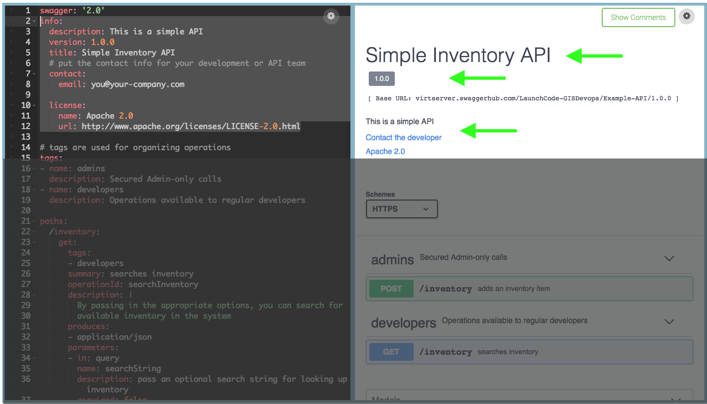

class: center, middle # Swagger ## Documenting REST APIs --- ## Review * Humans communicate with humans via HTML. -- * Machines communicate with machines via APIs. -- * REST standardizes APIs so that machines can communicate *without humans*. -- * ... -- * How do humans communicate with the machines? --- # Swagger * API documentation tool used extensively by the NGA -- * Designed to assist in creating OpenAPI compliant REST services -- * Config files can be written in YAML or JSON -- * <a href="http://petstore.swagger.io/#/" target="_blank">Example</a> --- ## What's the difference between Swagger and OpenAPI? * Swagger was originally a tool and a standard specification for defining RESTful interfaces. -- * In 2015, the standard specification was donated to the OpenAPI Initiative. -- * Swagger now represents an open source toolset around building APIs -- * The OpenAPI Specification defines a universal format used to describe APIs -- * Note: OpenAPI Initiative released OpenAPI Specification 3.0 in 2017 --- ## Using Swagger Swagger is a toolset for generating APIs and documentation. -- Use Cases: -- * Documentation tool (SwaggerUI): easily describing the API -- * Self Documenting (Springfox): write the documentation based on annotations within the code -- * Code Generation (Swagger Codegen): you write the description and it generates the code -- **Our Focus**: Swagger as a documentation tool (manual and self-documenting) --- ## How it Works * Create a YAML or JSON file -- * In the file, define all paths / endpoints for the API -- * In the file, define all responses for each endpoint -- * Swagger uses JavaScript to parse the config file and display HTML --- ## YAML YAML = "Yet Another Markup Language" YAML is very similar to JSON, but is less verbose -- * Here is a list ``` fruits: - Apples - Oranges - Grapes ``` -- * Here is a dictionary (key-value pair) ``` - martin name: Martin Dveloper job: Developer ``` --- ## YAML Swagger Config * 4 important sections to a Swagger config -- ``` swagger: '2.0' # 2.0 or 3.0 info: # high level information about your API tags: # resources in your API paths: # endpoints in your API definitions: # reusable definitions ``` --- ## YAML Swagger Config * API Information Section ``` info: description: This is a simple API # description version: 1.0.0 # version of API title: Simple Inventory App # your application name contact: email: you@your-company.com # your email license: name: Apache 2.0 url: http://www.apache.org/licenses/LICENSE-2.0.html ``` --- ## YAML Swagger Config * API Information Section  --- ## YAML Swagger Config * Tags Section ``` tags: # tags provide a summary about endpoints - name: admins description: Secured Admin-only calls - name: developers description: Operations available to regular developers ``` --- ## YAML Swagger Config * Tags group your endpoints and provide extra details. <img src="images/swagger-yaml-tags-section.png"/> --- ## YAML Swagger Config * Paths Section ``` paths: /inventory: # endpoint URL get: # HTTP method tags: # determines the header) - developers # matches with 'tag' section summary: searches inventory operationId: searchInventory description: | # | means multi line text string By passing in the appropriate options, you can search for available inventory in the system produces: # one or more content types - application/json ... ``` --- ## YAML Swagger Config * Note: since the path is tagged developers it is under the developers heading <img src="images/swagger-yaml-path-section.png"/> --- ## YAML Swagger Config * Paths Section (continued) ``` paths: ... parameters: # one or more query parameters - in: query name: searchString description: pass an optional search string for looking up inventory required: false type: string responses: # one or more reponse codes 200: description: search results matching criteria schema: type: array items: # vvv references a definition vvv $ref: '#/definitions/InventoryItem' 400: description: bad input parameter ``` --- ## YAML Swagger Config * Tags group your endpoints and provide extra details. <img src="images/swagger-yaml-path-cont-section.png"/> --- ## YAML Swagger Config * Definitions allow you create reusable chunks of YAML ``` definitions: InventoryItem: type: object required: # list of all fields - id - name properties: # each field defined id: type: string format: uuid example: asd3083 name: type: string example: Widget Adapter ``` --- ## YAML Swagger Config * Definitions are listed at the bottom of SwaggerUI <img src="images/swagger-yaml-definitions-section.png"/> --- ## YAML Swagger Config * Using `$ref` allows you to reuse pieces of YAML from definitions ``` items: $ref: '#/definitions/InventoryItem' ... definitions: InventoryItem: type: object required: ``` *is the same as* ``` items: type: object required: -id -name ``` --- ##Walkthrough ---